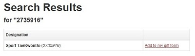
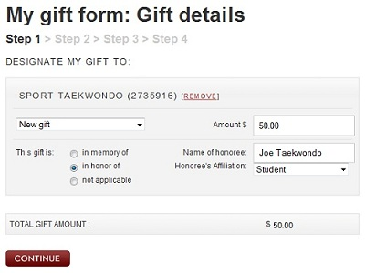

Kickathon will be Sunday, May 1 starting at 4:30pm on the Kresge Lawn. We'll be throwing 1000 kicks (each!) and raising money to help support the club in all that we do. A third of the proceeds from Kickathon will also go to support Partners in Health, a Boston-based non profit that is providing medical care to victims of the Haiti earthquake
Collect donations from friends, family, professors, PIs, etc. and win awesome prizes for yourself or your belt group! Awards will be given to the two individuals who raise the most money as well as the belt group that raises the most money per person. Donors can make flat pledges, pledge a certain amount of money per kick, or buy boards for you to break (boards are $10 each).
Donate Online
Online donations can be made via the MIT giving site. Here's how:
Step One: Designate Sport Taekwondo as the recipient.
On the giving site, search for fund number 2735916 or "Sport Taekwondo". In the results, click "Add to my gift form".
Step Two: Enter gift amount and club member's name.
Please select "In honor of:" and enter the name of the club member you are sponsoring. This will help us keep track of who has raised how much money.
Step Three: Login to Infinite Connection or enter personal info.
Following instructions on the website, either login to your Infinite Connection account or fill in the requested personal information as a guest. After entering your billing information, you will receive a confirmation email.
Step Four: Tell your club member!
Please make sure to let your member know that you are donating to him/her! Club members: On your donation sheet, write "Online" in the "Paid?" column.